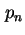
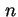

Next: พิสูจน์
Up: ทฤษฎีความน่าจะเป็นคงตัวของสถานะ
Previous: ทฤษฎีความน่าจะเป็นคงตัวของสถานะ
Contents
Index
ความน่าจะเป็นคงตัวของสถานะ  ของกระบวนการเกิด-ดับ ในสถานะ  สามารถหาได้จาก
ในที่นี้  คือความน่าจะเป็นที่ระบบจะอยู่ในสถานะศูนย์
คือความน่าจะเป็นที่ระบบจะอยู่ในสถานะศูนย์
Vara Varavithya
2002-03-09